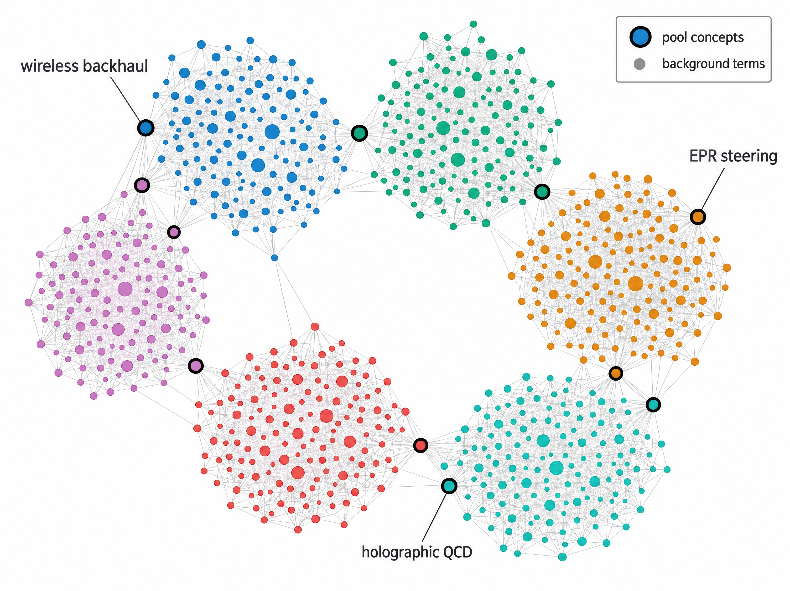
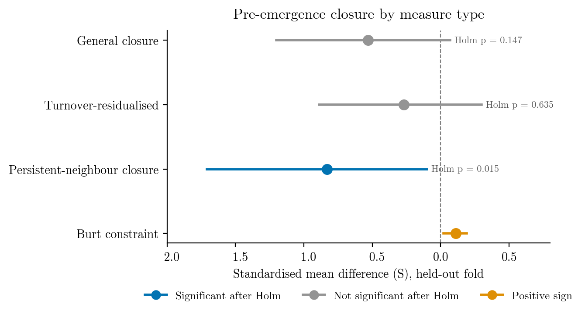

Host vocabulary predicts whether new scientific concepts take root across disciplinary boundaries
When a scientific concept first appears in a new disciplinary subfield, what determines whether it catches on? This study finds that the vocabulary composition of the concept's initial partner terms carries a signal: if those partners belong to the host field's own vocabulary, newcomer scientists in that field are substantially more likely to adopt the concept. A one-standard-deviation increase in host-vocabulary share raises five-year newcomer uptake by 19% on a sealed held-out fold (incidence-rate ratio 1.19, 95% CI 1.06 to 1.33) and by 23% in an independent population of 191 MeSH biomedical concepts (1.23, 1.12 to 1.36; biomedicine-to-biomedicine entries only). The effect is on how much newcomer uptake follows, not on a binary establishment threshold.
Contributions
-
1
Host-vocabulary composition predicts newcomer uptake
A one-standard-deviation increase in host-vocabulary share raises five-year newcomer uptake by 30% on the screen fold (IRR 1.30, 95% CI 1.16 to 1.45), by 19% on a sealed held-out fold opened once (IRR 1.19, 1.06 to 1.33), and by 23% in an independent MeSH biomedical population (IRR 1.23, 1.12 to 1.36; verdict REPLICATED for biomedicine-to-biomedicine entries).
-
2
Outcome-blind, multi-population dataset
426 OpenAlex concepts (366 emerging, 60 stationary reference) with 462,812 works, split into screen and held-out folds, plus an independent 191-concept MeSH biomedical check population.
-
3
Host-specific effect through both margins
The effect is host-specific (though the Balassa-index lift test is near-collinear with the continuous share), operates through both the extensive margin (whether uptake starts: +6.4 pp per SD) and the intensive margin (how much: IRR 1.18), and shows no detectable variation by origin field.
-
4
Structural precursors declared dead
The pre-registered held-out test returns R1_DEAD: structural precursors of sustained uptake are volume and churn correlates. Only persistent-neighbour closure survives (coefficient −1.07, Holm p = 0.015). Burt constraint is positive: emerging concepts sit in more constrained, not more brokered, ego networks.
-
5
Diffusion typology and adopter enrichment
A stable two-type typology (localised vs. broad from the start), an expansion-before-diffusion ordering (25 of 26 dual-onset concepts), and adopter enrichment for prior partner exposure (OR 3.09; prevalence 0.79 vs. 0.61; screen fold only).
Code: Checking concept spread types on unseen and medical data
Method

The study assembles an outcome-blind pool of 426 scientific concepts from OpenAlex, builds yearly co-word network snapshots from 462,812 works, and tests two research questions about how new concepts establish themselves in foreign disciplinary territory.
Data
The concept pool contains 426 scientific concepts (366 emerging, 60 stationary reference) that first appeared in OpenAlex between 2005 and 2016, with 20 to 300 first-appearance papers. Of the 366 emerging concepts, 247 form the screen fold and 119 the held-out fold, split by a SHA-1 hash before any outcomes were inspected. Each concept was grounded through a logistic-regression classifier (F1 = 0.82, AUC = 0.89) and variant merger (B-cubed F1 = 0.78). An independent check population of 191 new MeSH biomedical concepts was drawn from MeSH descriptors established 2004 to 2018.
Co-word network
From a design-weighted background sample of 259,716 works, the study built 25 yearly three-year-window co-occurrence snapshots (approximately 27,000 nodes and 84,000 edges per snapshot) with association-strength edge weights and Leiden community detection.
RQ1: Emergence precursors
For each concept showing sustained uptake, a matched event study compares closure measures in the pre-onset window against up to three control concepts (drawn with replacement) from the same first-appearance band and origin group. Four closure variants are tested: general closure, turnover-residualised closure, persistent-neighbour closure (restricted to top associates present in consecutive years), and Burt constraint. Bootstrap confidence intervals and Holm-corrected p-values control for multiple testing.
RQ2: Host-entry grafting
A host-entry event is the first year a concept appears in a non-origin subfield together with at least five co-occurring partner terms. The host-vocabulary share is the tag-weighted mean of each partner's pre-entry publication share in the host subfield. The outcome is five-year newcomer uptake: the count of host-subfield papers by author-disjoint newcomers. The model is a Poisson pseudo-maximum-likelihood (PPML) regression with concept-clustered standard errors and two pre-registered specifications. The co-primary specification includes concept, entry-year and host fixed effects; the primary specification adds concept-by-year and host-by-year fixed effects.
Results
Host-entry grafting (RQ2)
On the screen fold, a one-standard-deviation increase in host-vocabulary share raises newcomer uptake by 30% (co-primary IRR 1.30, 95% CI 1.16 to 1.45). On the sealed held-out fold, opened once, the co-primary IRR is 1.19 (95% CI 1.06 to 1.33; the pre-declared kill rule is not triggered). On the MeSH biomedical population, the co-primary IRR is 1.23 (95% CI 1.12 to 1.36; verdict REPLICATED for biomedicine-to-biomedicine entries). The inverse-variance weighted pooled estimate across screen and MeSH is 1.26 (95% CI 1.17 to 1.36).
Co-transfer of origin companions is null across all folds and specifications. The fully saturated primary specification is inconclusive on the held-out fold (IRR 0.98, 95% CI 0.70 to 1.37, 30 clusters).
Margin decomposition
The host-vocabulary effect operates through both margins. The extensive-margin effect is +6.4 percentage points per standard deviation (95% CI 4.8 to 8.1), approximately a 13% increase relative to the 51% base rate. The intensive-margin IRR per standard deviation is 1.18 (95% CI 1.10 to 1.27). The extensive margin accounts for 38% of the total effect (95% CI 21% to 55%); the intensive margin accounts for the remaining 62%.
Adopter enrichment
Newcomer scientists who adopt a concept are enriched for prior corpus exposure to its entry partners (conditional logistic regression OR 3.09; prevalence 0.79 vs. 0.61; 1,013 matched strata, screen fold only, not independently confirmed). Enrichment follows a vocabulary gradient: FOREIGN partners OR 2.88, ADJACENT partners OR 1.91, NATIVE partners OR 1.47. The design cannot separate absorptive capacity from topical proximity.
Structural precursors (RQ1)
Under the pre-registered kill rule, R1_DEAD: structural precursors of sustained uptake are volume and churn correlates. Only persistent-neighbour closure survives Holm correction on the held-out fold (panel coefficient −1.07, Holm p = 0.015; event-study standardised mean difference −0.83, 95% CI [−1.71, −0.10]). General closure (Holm p = 0.147) and turnover-residualised closure (Holm p = 0.635) do not survive. Burt constraint is positive (+0.11, 95% CI [0.02, 0.19]): emerging concepts sit in more constrained, not more brokered, ego networks.
The MeSH closure replication is directional under a sensitivity label (standardised mean difference −0.42, Holm p = 0.039, n = 29) but null under the primary label (−0.09, Holm p = 0.677, n = 15).
Null findings
Co-transfer is null in all specifications and populations. The breadth-prediction screen (does openness predict how many new subfields a concept will reach?) found no effect beyond growth and level baselines. The link between pre-emergence closure and later host-entry vocabulary composition is null (partial correlation 0.025 screen, 0.053 held-out, both intervals including zero).
Figures




Limitations
- Held-out fold scope. The held-out fold's outcomes were sealed and opened once, but its entry events, pre-entry features and population size were computed on the same pipeline before opening. The confirmation guards against outcome-driven choices, not against every choice of frame.
- Population bias. The concept pool is dominated by physics, physical-sciences and computer-science concepts from arXiv. The MeSH population covers only biomedicine-to-biomedicine entries; its coverage rule removes 34% of partner-qualified entries. Generalisation to social sciences, humanities or engineering is untested.
- Primary specification underpowered. The fully saturated specification with concept-by-year and host-by-year fixed effects is inconclusive on the held-out fold (IRR 0.98, 30 clusters). The held-out confirmation rests on the co-primary specification, which leaves more residual variation.
- Binary establishment null. Host-vocabulary share predicts the count of newcomer papers and the probability of any newcomer uptake, but binary establishment (at least three newcomer papers in at least three of five years) is null on the held-out fold (p = 0.165). The effect is graded, not threshold-based.
- Cluster-robust inference. The cluster-robust variance estimator rejects 10% to 11% of null shuffles in simulation (target 5%). Wild-cluster bootstrap and permutation tests give consistent results, but standard p-values should not be taken at face value.
- Explanatory more than predictive. Adding host-vocabulary share lowers the held-out fold's out-of-sample mean deviance by 0.50, but the 95% CI of the change (−1.24 to +0.02) includes zero; on MeSH, out-of-fold deviance falls by 0.146 (95% CI of the change −0.306 to −0.008).
- Adopter evidence unconfirmed. The adopter-level enrichment (OR 3.09) is screen-fold only, not independently confirmed. The design cannot separate absorptive capacity from topical proximity.
- RQ1 caveats. R1_DEAD under the frozen kill rule. The one confirmed row, persistent-neighbour closure, had a screen event-study interval that included zero. The held-out matching falls back to screen controls for 17 of 25 unique controls, so the estimator is not fully control-side independent.
Research artifacts
- Labelled science phrases and new-term pool
- Prior art and plan for concept-spread study
- Do concept citation chains survive in new fields?
- Checking the report's numbers and the closure effect
- Check every paper number against its source
- Where the host-vocabulary finding sits in the literature
- Paper figures drawn straight from result files